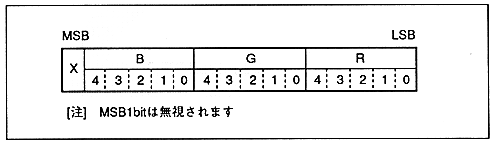

Table 5.2 Guro shading table
table address | corresponding vertex | |
Sprite, Polygon, Polyline | Line | |
Table start address | Vertex (A) | Line start point |
Table start address + 2 | Vertex (B) | line End point |
Table start address + 4 | Vertex (C) | Ignore |
Table start address + 6 | Vertex (D) | Ignore |
Figure 5.4 RGB code format
